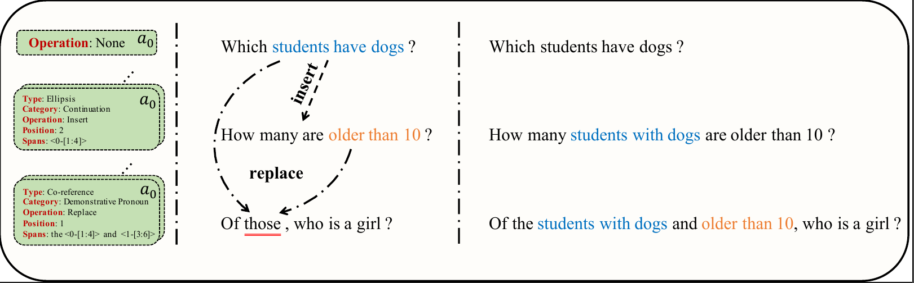

DIR: A Large-Scale Dialogue Rewrite Dataset for Cross-Domain Conversational Text-to-SQL
Li, J.; Chen, Z.; Chen, L.; Zhu, Z.; Li, H.; Cao, R.; Yu, K. Appl. Sci. 2023, 13, 2262. https://doi.org/10.3390/app13042262 [PDF]
Abstract
Semantic co-reference and ellipsis always lead to information deficiency when parsing natural language utterances with SQL in a multi-turn dialogue (i.e., conversational text-to-SQL task). The methodology of dividing a dialogue understanding task into dialogue utterance rewriting and language understanding is feasible to tackle this problem. To this end, we present a two-stage framework to complete conversational text-to-SQL tasks. To construct an efficient rewriting model in the first stage, we provide a large-scale dialogue rewrite dataset (DIR), which is extended from two cross-domain conversational text-to-SQL datasets, SParC and CoSQL. The dataset contains 5908 dialogues involving 160 domains. Therefore, it does not only focus on conversational text-to-SQL tasks but is also a valuable corpus for dialogue rewrite study. In experiments, we validate the efficiency of our annotations with a popular text-to-SQL parser, RAT-SQL. The experiment results illustrate 11.81 and 27.17 QEM. accuracy improvement on SParC and CoSQL, respectively, when we eliminate the semantic incomplete representations problem by directly parsing the golden rewrite utterances. The experiment results of evaluating the performances of the two-stage frameworks using different rewrite models show that the efficiency of rewrite models is important and still needs improvement. Additionally, as a new benchmark of the dialogue rewrite task, we also report the performances of different baselines for related studies.

Intorduction
Structured query language (SQL) is an executable machine language that can represent more complex intentions. text-to-SQL tasks aim to represent the natural language with SQL so that target results can be queried from the database precisely, which is important for constructing an advanced language-based human-machine interactive system. The conversational text-to-SQL task is a kind of text-to-SQL task considering the scene of task-oriented multi-turn dialogue.
In conversational text-to-SQL tasks, the parsing results always contain complicated structures and a wealth of information. It is difficult to protect the completeness of the information. Some works concatenate the dialogue history and current utterance as the input to complement the historical information. However, there is not only historical information but also relationship information across different turns. Co-reference and ellipsis of semantics are two common language phenomenon in multi-turn dialogues which represents the relationship information. The method of concatenating can not tackle the problem of relationship information deficiency. Therefore, a line of research divides a dialogue understanding task into two parts, dialogue utterance rewriting and language understanding, to inhibit the influence of co-reference and ellipsis. In the rewriting stage, dialogue history and the current utterance will be rewritten as a single utterance. In this case, elliptical semantics are restored in text forms. Then, the corresponding single-turn model will predict the results with the rewritten utterance in the understanding stage.
The previous empirical performance demonstrates the feasibility of the two-stage framework in various dialogue understanding tasks. To this end, we attempt to apply the two-stage framework to tackle conversational text-to-SQL tasks in this work. To construct the rewriting model in the first stage, we propose a large-scale DIalogue Rewrite~(DIR) dataset in this work. The dataset is expanded from two typical conversational text-to-SQL datasets, SParC and CoSQL, containing 5908 dialogues and 160 domains. We collect the annotations by crowd-sourcing. To avoid the problem of spelling mistakes and word missing, we built a click-based graph user interface for annotators. To guarantee the data quality, we set up three checking procedures and manually correct the annotation mistakes. Besides, DIR is not an expert dataset focusing on conversational text-to-SQL tasks. It is also a quality dataset for dialogue rewrite research, especially in cross-domain dialogue setups. Apart from a large number of samples and domains, DIR also provides rewriting action category tags and operation details to track the rewriting process, which is useful for future interpretation studies.
In the experiments, we first use the typical text-to-SQL model RAT-SQL to parse the oracle rewritten utterances and the concatenated utterances and compare the question exact match~(QEM.) accuracy of them. Experiment results illustrate that the performance obtains 12\% and 27\% improvement on SParC and CoSQL, respectively. We further train different rewrite models in the first stage to assess the robustness of the two-stage framework. Experiment results demonstrate that dialogue format and efficient rewrite methods are crucial for the two-stage framework. Finally, we summarize the error cases and provide in-deep analysis.
The contributions of this work are:
- We collect a large-scale cross-domain dialogue rewriting dataset DIR for conversational text-to-SQL. Besides, we provide the additional action category labels and the rewrite process tracking annotations for interpretation research.
- We evaluate the effectiveness of the two-stage framework with DIR.
- We provide in-deep analysis of the two-stage framework in conversational text-to-SQL.